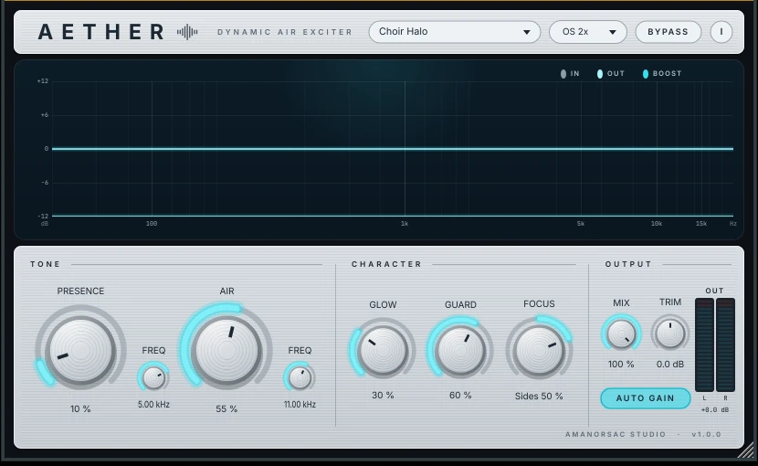

Dynamic Air Exciter · VST3 and AU · Windows and macOS
AETHER
Air you can aim.
AETHER gives you tunable presence and air bands, a real harmonic exciter, and a guard that keeps the sparkle while it drops the harshness. Point the air at the centre for a lead vocal, or out to the sides for a choir.
$12 once · one key covers two computers · installs through Amanorsac Hub

More Than a Brightness Slider
An EQ can only lift what is already in a recording. When a vocal is dull or a choir mic is too far away, the top end simply is not there to lift, and turning up the treble just makes the noise and the esses louder. AETHER was built for that problem.
It generates new harmonics in the air region, lets you tune exactly where the presence and air sit, and holds back only the boost when the sibilance range gets hot. The air stays and the harshness does not.

Vocals and Choir
Made for the Voices in the Room
Lead vocals that need to cut through a full band, and choirs recorded from a distance that need to sound close. Those are the two jobs AETHER was tuned on.
Five Controls, Each With a Job You Can Name
Presence
A wide, musical lift anywhere between 1.5 and 8 kHz for bite and articulation. You tune it, so it is not fixed at a frequency somebody else chose.
Air
A high shelf with a soft resonant corner, tunable from 6 to 18 kHz, for silk and sparkle that sits where the source needs it.
Glow
Harmonic excitation that generates top end that was never in the recording. This is what rescues a dull vocal or a distant choir mic.
Guard
Watches the 5 to 9 kHz range and pulls back the boost, and only the boost, when it gets hot. The air stays. The sibilance does not.
Focus
Sweeps the air from the centre of the stereo image out to the sides. Keep it in the centre for a lead vocal, or push it wide for pads and choir.
And Underneath
Mix for parallel blending, Auto Gain for a fair level-matched comparison, 2x and 4x oversampling around the exciter, and an analyser that draws exactly what is being added.
Compared With Fresh Air
Fresh Air is a good free plug-in with a deliberately simple design: two sliders and no decisions. This comparison is for people who have reached the edge of that.
| Fresh Air | AETHER | |
|---|---|---|
| Bands | Two, fixed centres | Presence (1.5 to 8 kHz) and Air (6 to 18 kHz), both tunable |
| Harmonics | None, it is an EQ | Soft saturation exciter limited to the air region |
| Harshness control | None | Reduces the boost only, when 5 to 9 kHz gets hot |
| Stereo | Left and right | Sweep the air from centre to sides |
| Level matching | Trim | RMS matched wet and dry, so brighter never pretends to be better |
| Oversampling | None | 2x and 4x around the exciter |
| Presets | None | Ten, named for the job |
Ten Starting Points, Named for the Job
Open one and it is already doing something sensible to what you have. Nothing here needs learning before it is useful.
Vocal
Close-miked lead vocals. Presence forward, focus in the centre and the guard working on the esses.
Choir
What Focus was built for. Air swept to the sides so a wide source opens up without the middle getting brittle.
Piano
Glow rather than shelf, for the top octaves of a piano recorded in a room.
Bus
Gentle across a group, with Mix pulled back so it lifts rather than glazes.
Mastering
Small numbers, oversampling up and auto gain on. The setting you audition before you commit.
Tech Specs
Formats
VST3 on Windows. VST3 and AU on macOS.
Windows
Windows 10 or 11, 64 bit.
macOS
macOS 10.13 or later. Universal, Intel and Apple silicon.
Hosts
Any VST3 or AU host, including Studio One, Ableton Live, Logic, REAPER, Cubase, FL Studio, and Pro Tools through a VST3 wrapper.
Install
One self-contained installer with no runtime downloads and no administrator rights. Uninstalls cleanly and leaves your presets.
Licence
No iLok, dongle or subscription. One key, two computers, thirty days offline at a stretch.
Questions
How does activation work?
How do I move it to another computer?
Is there a Mac version?
Windows says it protected my PC. Is something wrong?
Does it send anything while I work?
AETHER
$12
One perpetual licence for two computers, activated inside the plug-in and moved by you. A year of updates is included, and the version you have keeps working after that.